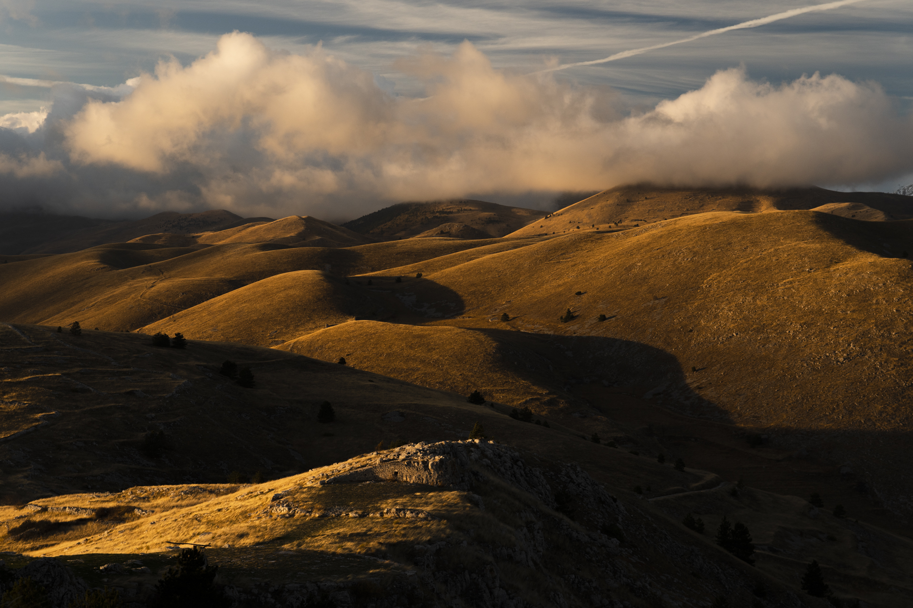

Qui inseriremo una tua fotografia
Fotografia
Progetto fotografico
Spazio per il titolo e la descrizione di un tuo progetto reale.

Fotografia · Video · Identità visiva
Sono Vincenzo Di Donato, fotografo, videomaker e grafico in Abruzzo. Creo immagini e contenuti visivi per raccontare persone, attività e progetti.
Progetti selezionati
Fotografia, video e grafica: linguaggi diversi, un unico obiettivo. Dare forma a una storia.
Fotografia
Spazio per il titolo e la descrizione di un tuo progetto reale.
Video
Spazio per un video promozionale, un contenuto social o un cortometraggio.
Grafica e branding
Spazio per un'identità visiva, un logo o altri materiali grafici.
Come posso aiutarti
Dall'idea al contenuto finale, costruisco progetti visivi in base alle esigenze di ogni collaborazione.
Ritratti, eventi, sport e immagini per attività: fotografie per raccontare persone e momenti.
Video promozionali, racconti di eventi e progetti creativi, dalle riprese al montaggio.
Reel, fotografie e contenuti visivi per presentare la tua attività e comunicare con il tuo pubblico.
Loghi, identità visiva e materiali grafici per dare coerenza alla comunicazione del tuo brand.
Dietro le immagini
Sono un fotografo, videomaker e grafico con base in Abruzzo. Il mio lavoro si muove tra immagini, narrazione e comunicazione visiva.
Mi interessa trovare il linguaggio giusto per ogni progetto: l'atmosfera di un video, il gesto in un ritratto, l'identità di un'attività.
Collaboro con persone, realtà locali e progetti creativi, curando il percorso dall'idea iniziale alla realizzazione dei contenuti.
Iniziamo da un'idea
Hai bisogno di fotografie, di un video o di una nuova identità visiva? Qui troverai i miei contatti per richieste, preventivi e collaborazioni.
Recapiti in aggiornamento.